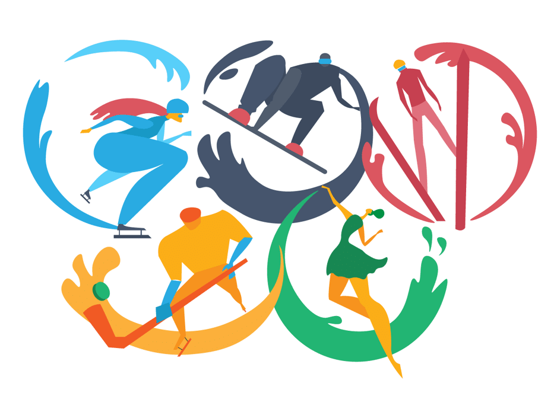

WELCOME TO OLYMPIC SPORTS ANALYSIS
Olympic sports represent the pinnacle of human athleticism and
competitive spirit. These sports, encompassing a wide array of
disciplines, have a rich history dating back to ancient Greece.
They epitomize the values of excellence, dedication, and unity,
serving as a global platform for nations to come together in
peaceful competition.
At the heart of Olympic sports is a celebration of human
potential. Athletes train for years, often their entire lives,
honing their skills and pushing their bodies to extraordinary
limits. Whether it's the grace of gymnastics, the endurance of
marathon running, the precision of shooting, or the power of
weightlifting, each sport showcases the unique talents and
abilities of individuals from diverse backgrounds and cultures.
The Olympic motto, "Citius, Altius, Fortius" (Faster, Higher,
Stronger), encapsulates the constant pursuit of surpassing one's
own limits, as athletes aim to achieve new world records and
personal bests.
Olympic sports are not only about individual achievements but also
the unifying power of nations. The Games bring together athletes
from all corners of the globe, transcending political and cultural
boundaries. This unparalleled gathering of diverse talents
promotes understanding, friendship, and cooperation, fostering a
sense of global community. Athletes proudly represent their
nations, and the world watches in awe as they compete on the
world's most prestigious stage.
The legacy of Olympic sports extends beyond the podium. The Games
inspire countless individuals to take up sports, promoting health,
fitness, and an active lifestyle. They also serve as a source of
pride and inspiration for future generations, as young athletes
aspire to emulate the champions they see on TV or in the stadium.
Olympic sports are a source of stories that move us, from tales of
triumph over adversity to displays of sportsmanship that transcend
victory or defeat.
In the end, Olympic sports remind us of the boundless potential of
the human body and spirit. They showcase the values of
perseverance, determination, and fair play. As the world comes
together every four years to celebrate these sports, we are
reminded of the enduring power of the Olympic movement and its
role in promoting peace, unity, and the relentless pursuit of
excellence.

Continue